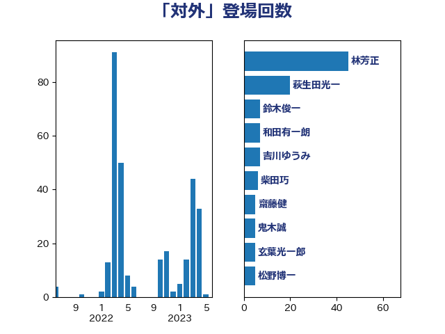

単語「対外」

| 林芳正 | 自由民主党 | 45 回 |
| 萩生田光一 | 自由民主党 | 20 回 |
| 鈴木俊一 | 自由民主党 | 7 回 |
| 和田有一朗 | 日本維新の会 | 7 回 |
| 吉川ゆうみ | 自由民主党 | 7 回 |
| 柴田巧 | 日本維新の会 | 6 回 |
| 齋藤健 | 自由民主党 | 5 回 |
| 鬼木誠 | 立憲民主党 | 5 回 |
| 玄葉光一郎 | 立憲民主党 | 5 回 |
| 松野博一 | 自由民主党 | 5 回 |
| 岸田文雄 | 自由民主党 | 5 回 |
| 石井拓 | 自由民主党 | 4 回 |
| 山下貴司 | 自由民主党 | 4 回 |
| 鈴木貴子 | 自由民主党 | 3 回 |
| 西村康稔 | 自由民主党 | 3 回 |
| 稲富修二 | 立憲民主党 | 3 回 |
| 漆間譲司 | 日本維新の会 | 3 回 |
| 浜口誠 | 国民民主党 | 3 回 |
| 岡田克也 | 立憲民主党 | 3 回 |
| 小熊慎司 | 立憲民主党 | 3 回 |
| 大塚耕平 | 国民民主党 | 3 回 |
| 上杉謙太郎 | 自由民主党 | 3 回 |
| 高野光二郎 | 自由民主党 | 2 回 |
| 青山繁晴 | 自由民主党 | 2 回 |
| 道下大樹 | 立憲民主党 | 2 回 |
| 逢坂誠二 | 立憲民主党 | 2 回 |
| 藤岡隆雄 | 立憲民主党 | 2 回 |
| 葉梨康弘 | 自由民主党 | 2 回 |
| 秋野公造 | 公明党 | 2 回 |
| 石井正弘 | 自由民主党 | 2 回 |
| 渡辺周 | 立憲民主党 | 2 回 |
| 河野義博 | 公明党 | 2 回 |
| 武井俊輔 | 自由民主党 | 2 回 |
| 小田原潔 | 自由民主党 | 2 回 |
| 塩川鉄也 | 日本共産党 | 2 回 |
| 古川禎久 | 自由民主党 | 2 回 |
| 上田清司 | 国民民主党 | 2 回 |
| 高良鉄美 | 無所属 | 1 回 |
| 高村正大 | 自由民主党 | 1 回 |
| 音喜多駿 | 日本維新の会 | 1 回 |
| 青木愛 | 立憲民主党 | 1 回 |
| 青山大人 | 立憲民主党 | 1 回 |
| 鈴木庸介 | 立憲民主党 | 1 回 |
| 野田佳彦 | 立憲民主党 | 1 回 |
| 蓮舫 | 立憲民主党 | 1 回 |
| 落合貴之 | 立憲民主党 | 1 回 |
| 舩後靖彦 | れいわ新選組 | 1 回 |
| 羽田次郎 | 立憲民主党 | 1 回 |
| 美延映夫 | 日本維新の会 | 1 回 |
| 緒方林太郎 | 無所属 | 1 回 |
| 福田昭夫 | 立憲民主党 | 1 回 |
| 神谷宗幣 | 参政党 | 1 回 |
| 磯崎仁彦 | 自由民主党 | 1 回 |
| 石橋通宏 | 立憲民主党 | 1 回 |
| 石井章 | 日本維新の会 | 1 回 |
| 田村貴昭 | 日本共産党 | 1 回 |
| 田島麻衣子 | 立憲民主党 | 1 回 |
| 牧山ひろえ | 立憲民主党 | 1 回 |
| 江田憲司 | 立憲民主党 | 1 回 |
| 横沢高徳 | 立憲民主党 | 1 回 |
| 森本真治 | 立憲民主党 | 1 回 |
| 森山浩行 | 立憲民主党 | 1 回 |
| 松川るい | 自由民主党 | 1 回 |
| 東徹 | 日本維新の会 | 1 回 |
| 杉本和巳 | 日本維新の会 | 1 回 |
| 早坂敦 | 日本維新の会 | 1 回 |
| 掘井健智 | 日本維新の会 | 1 回 |
| 徳永久志 | 立憲民主党 | 1 回 |
| 山田賢司 | 自由民主党 | 1 回 |
| 山本太郎 | れいわ新選組 | 1 回 |
| 山本剛正 | 日本維新の会 | 1 回 |
| 小沼巧 | 立憲民主党 | 1 回 |
| 小林一大 | 自由民主党 | 1 回 |
| 宮崎勝 | 公明党 | 1 回 |
| 大西健介 | 立憲民主党 | 1 回 |
| 大島九州男 | れいわ新選組 | 1 回 |
| 吉田宣弘 | 公明党 | 1 回 |
| 古賀之士 | 立憲民主党 | 1 回 |
| 古屋範子 | 公明党 | 1 回 |
| 仁比聡平 | 日本共産党 | 1 回 |
| 井上貴博 | 自由民主党 | 1 回 |
| 三浦信祐 | 公明党 | 1 回 |